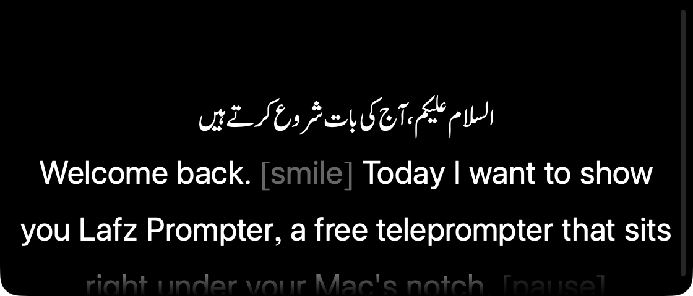

A teleprompter under your notch, in Urdu and English
آپ بولیں، لفظ ساتھ چلیں
Free, open-source macOS app that keeps your script right under the camera. Urdu scripts show in Nastaliq automatically, and the prompter is hidden from screen recordings and screen sharing.
Download for MacFree forever. macOS 14 or newer, Apple Silicon and Intel.

Features
Urdu in Nastaliq
Urdu scripts are set in Jameel Noori Nastaleeq or Noto Nastaliq Urdu automatically, with English words kept in the system font. Any installed font can be picked instead.
Hidden from recordings
Optionally invisible to screen recordings, Zoom, Meet and other screen sharing.
Voice activation
Scrolls while you speak and pauses when you stop. The mic is only on after you press Play.
Global shortcuts
Control-Option-P to play or pause, Control-Option-H to show or hide, and Control-Option with the arrow keys for speed and scrolling, from any app.
Stage directions
Text in [brackets] is dimmed, so cues like [pause] stay visible without being read out.
Adjustable
Speed, text size, alignment, line spacing, fades, size and position, and dark or light themes. Works on any display.
Installing
- Download the zip and drag Lafz Prompter into your Applications folder.
- The app is not signed with an Apple Developer ID, so the first time, right-click it and choose Open. If macOS still blocks it, go to System Settings, Privacy & Security, and click Open Anyway.
- It lives in the menu bar. Open Settings from there to paste your script.
- For Nastaliq, install Noto Nastaliq Urdu or Jameel Noori Nastaleeq if you don't have one already.
Why this exists
Lafz Prompter is based on NotchPrompter by Jakub Pomykała. NotchPrompter was released under the MIT License until May 2026, when its license changed to personal, non-commercial use only. Lafz Prompter continues from the last MIT-licensed version, adds Urdu support and fixes, and stays free and open source for everyone. It is not affiliated with or endorsed by NotchPrompter.